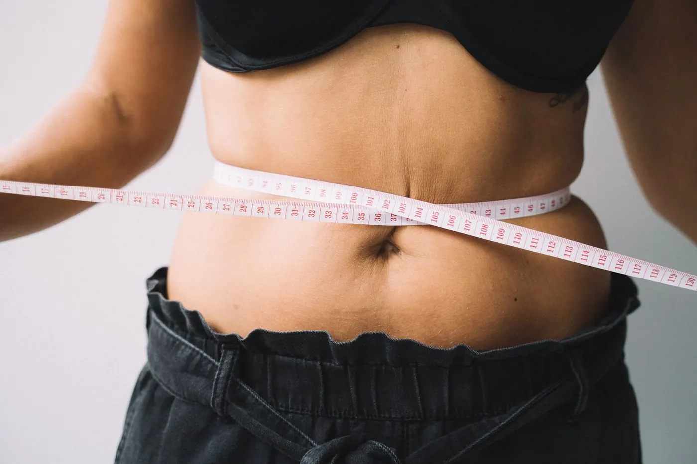

Silhueta conceitualContorno
InícioReavaliaçãoIlustração conceitual · não é paciente real
Gordura localizada
Arraste a linha para comparar início e reavaliação na ilustração vetorial.
Ilustração, não é pacienteInício / Resultados
12 exemplos de apresentação
Como a clínica mostra a evolução: silhuetas conceituais, gráficos de medidas por etapa e espaço para fotos reais de pacientes que autorizaram.

Leia antes: esta galeria é uma demonstração. As silhuetas são ilustrações vetoriais, os números são de casos fictícios e as molduras estão vazias de propósito. Nada aqui é paciente real nem promessa de resultado. Resultados variam de pessoa para pessoa e dependem da avaliação.
12 exemplos
Silhueta conceitualContorno
Arraste a linha para comparar início e reavaliação na ilustração vetorial.
Ilustração, não é pacienteGráfico de medidasContorno
Exemplo de como as medidas aparecem no relatório de reavaliação do protocolo Vérona Contour.
Dados ilustrativosFotos reaisContorno
No site real: fotos de pacientes de gordura localizada que autorizaram por escrito, com data e número de sessões.
Moldura vaziaSilhueta conceitualFirmeza
Arraste a linha para comparar início e reavaliação na ilustração vetorial.
Ilustração, não é pacienteGráfico de medidasFirmeza
Exemplo de como as medidas aparecem no relatório de reavaliação do protocolo Vérona Firm.
Dados ilustrativosFotos reaisFirmeza
No site real: fotos de pacientes de flacidez que autorizaram por escrito, com data e número de sessões.
Moldura vaziaSilhueta conceitualInchaço
Arraste a linha para comparar início e reavaliação na ilustração vetorial.
Ilustração, não é pacienteGráfico de medidasInchaço
Exemplo de como as medidas aparecem no relatório de reavaliação do protocolo Vérona Balance.
Dados ilustrativosFotos reaisInchaço
No site real: fotos de pacientes de inchaço e retenção que autorizaram por escrito, com data e número de sessões.
Moldura vaziaSilhueta conceitualPós-operatório
Arraste a linha para comparar início e reavaliação na ilustração vetorial.
Ilustração, não é pacienteGráfico de medidasPós-operatório
Exemplo de como as medidas aparecem no relatório de reavaliação do protocolo Vérona Recovery.
Dados ilustrativosFotos reaisPós-operatório
No site real: fotos de pacientes de pós-operatório que autorizaram por escrito, com data e número de sessões.
Moldura vaziaFotos com a mesma luz, distância, ângulo e roupa, sempre com sua autorização por escrito.
Perimetria nos mesmos pontos marcados, adipômetro e bioimpedância no mesmo horário do dia.
Nenhuma foto vai para o site ou redes sociais sem um termo assinado. Você pode retirar a autorização quando quiser.
Quer medir o seu ponto de partida?